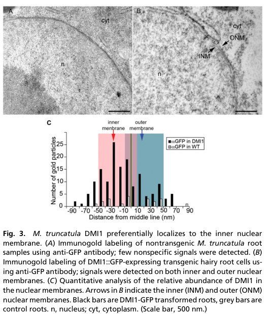

DMI1 (DOES NOT MAKE INFECTIONS 1) is the Medicago truncatula POLLUX-type member of the CASTOR/POLLUX family of cation channels. It has four predicted transmembrane helices and a large cytosolic C-terminal region with two RCK (regulator of K+ conductance) domains that form an MthK-like, Ca2+-regulated gating ring. DMI1 resides in the nuclear envelope of root cells, preferentially in the inner nuclear membrane, where it forms a complex with the Ca2+-permeable cyclic nucleotide-gated channels CNGC15a/b/c. Within this complex DMI1 is required to activate CNGC15 and acts as a pacemaker that sets the frequency of the nuclear and perinuclear Ca2+ oscillations ("calcium spiking") induced by rhizobial Nod factors and arbuscular mycorrhizal fungal signals. Its native pore is a non-selective cation filter that conducts K+ in planar bilayers; the leading model is that DMI1 provides counter-ion flux across the nuclear envelope during Ca2+ release, although Ca2+ permeability of the related Lotus CASTOR channel has been reported. dmi1 mutants lack Nod factor-induced calcium spiking and fail to establish both root nodule and arbuscular mycorrhizal symbioses, placing DMI1 in the common symbiosis signalling pathway upstream of the Ca2+ decoder CCaMK/DMI3.
| GO Term | Evidence | Action | Reason |
|---|---|---|---|
|
GO:0005515
protein binding
|
IPI
PMID:27230377 Nuclear-localized cyclic nucleotide-gated channels mediate s... |
MODIFY |
Summary: Interaction of DMI1 (via its C-terminus) with CNGC15c (A0A072VMJ3), one of the three nuclear-envelope Ca2+-permeable CNGC15 channels with which DMI1 forms a complex (Charpentier et al. 2016).
Reason: The interaction is real and functionally important, but "protein binding" is uninformative. The functional content of the DMI1-CNGC15 interaction is that DMI1 regulates CNGC15 gating: DMI1 is essential for activating CNGC15 and acts as a pacemaker for the oscillation frequency, with Ca2+-dependent mobility of the DMI1 C-terminal region (the region that binds the CNGC15 N-terminus) modulating CNGC15 gating (Cook et al. 2025). This matches "ion channel regulator activity" (modulates the activity of a channel via direct interaction with it).
Proposed replacements:
ion channel regulator activity
Supporting Evidence:
PMID:27230377
We demonstrate that the cyclic nucleotide-gated channels form a complex with the postassium-permeable channel, which modulates nuclear Ca(2+) release.
PMID:39814887
Together, these results demonstrate that DMI1 is not only essential for activating CNGC15, but it also acts as a pacemaker for the frequency of nuclear Ca2+ oscillations
PMID:39814887
This result further suggests that the mobility of the DMI1 C-terminal region in response to Ca2+ binding contributes to the pacemaker activity by modulating CNGC15 gating.
|
|
GO:0005515
protein binding
|
IPI
PMID:27230377 Nuclear-localized cyclic nucleotide-gated channels mediate s... |
MODIFY |
Summary: Interaction of DMI1 with CNGC15a (G7IBJ4) in the nuclear-envelope DMI1-CNGC15 channel complex (Charpentier et al. 2016).
Reason: As for the CNGC15c row: the interaction underlies DMI1 regulation of CNGC15 gating (activation and pacemaking of oscillation frequency; Cook et al. 2025), so the informative term is ion channel regulator activity rather than protein binding.
Proposed replacements:
ion channel regulator activity
Supporting Evidence:
PMID:27230377
We demonstrate that the cyclic nucleotide-gated channels form a complex with the postassium-permeable channel, which modulates nuclear Ca(2+) release.
PMID:39814887
Together, these results demonstrate that DMI1 is not only essential for activating CNGC15, but it also acts as a pacemaker for the frequency of nuclear Ca2+ oscillations
|
|
GO:0005515
protein binding
|
IPI
PMID:27230377 Nuclear-localized cyclic nucleotide-gated channels mediate s... |
MODIFY |
Summary: Interaction of DMI1 with CNGC15b (G7JND3) in the nuclear-envelope DMI1-CNGC15 channel complex (Charpentier et al. 2016); the interaction is retained by the autoactive DMI1 S760N variant (Liu et al. 2022).
Reason: As for the other CNGC15 rows: the interaction is the physical basis for DMI1 regulation of CNGC15 gating. Autoactive DMI1 drives spontaneous Ca2+ oscillations only in a CNGC15-dependent manner (Liu et al. 2022), and DMI1 activates and paces CNGC15 (Cook et al. 2025). Replace protein binding with ion channel regulator activity.
Proposed replacements:
ion channel regulator activity
Supporting Evidence:
PMID:35972963
Here, we demonstrate spontaneous activation of this channel complex, through gain-of-function mutations in DMI1, leading to spontaneous nuclear Ca2+ oscillations and spontaneous nodulation, in a CNGC15-dependent manner.
PMID:39814887
Together, these results demonstrate that DMI1 is not only essential for activating CNGC15, but it also acts as a pacemaker for the frequency of nuclear Ca2+ oscillations
|
|
GO:0006811
monoatomic ion transport
|
IEA
GO_REF:0000002 |
MODIFY |
Summary: InterPro2GO mapping from the CASTOR/POLLUX/SYM8-like family. DMI1 is a cation channel (bilayer K+ conductance; non-selective cationic selectivity filter), so ion transport is correct but very general.
Reason: DMI1 is a channel conducting cations across the nuclear envelope; the more precise process is monoatomic cation transmembrane transport. Cook et al. (2025) describe the native DMI1 filter as non-selective cationic, and Charpentier et al. (2016) describe DMI1 as potassium-permeable.
Proposed replacements:
monoatomic cation transmembrane transport
Supporting Evidence:
PMID:39814887
To confirm that the non-selective cation permeability of DMI1 is not essential for its function, we swapped the non-selective cationic filter of DMI1 that comprised the motif 'ADAGN' with the strictly potassium-selective signature 'TVGYG'
PMID:14963334
The DMI1 (does not make infections) gene encodes a novel protein with low global similarity to a ligand-gated cation channel domain of archaea.
|
|
GO:0006813
potassium ion transport
|
IEA
GO_REF:0000002 |
ACCEPT |
Summary: InterPro2GO mapping from the RCK_N domain. For DMI1 it is supported directly: DMI1 conducts K+ in planar lipid bilayers (about 64 pS in symmetrical KCl; Venkateshwaran et al. 2012), it is described as the potassium-permeable partner of CNGC15 (Charpentier et al. 2016), and a strictly K+-selective pore variant fully restores DMI1 function in planta (Cook et al. 2025).
Reason: Although the RCK_N domain alone would be weak grounds for a potassium transport claim, the experimental data for DMI1 support K+ conduction, and the TVGYG swap shows that K+ permeation is sufficient for symbiotic function. The Ca2+ selectivity reported for Lotus CASTOR (Kim et al. 2019) is homolog evidence and does not refute K+ transport by DMI1.
Supporting Evidence:
PMID:27230377
A potassium-permeable channel is known to be required for symbiotic Ca(2+) oscillations
PMID:39814887
These results demonstrate that substituting a non-selective filter with a potassium-selective filter does not impair the function of DMI1.
file:MEDTR/DMI1/DMI1-deep-research-falcon.md
The strongest **direct MtDMI1 ion-conduction measurement** is a single-channel conductance of approximately **64 pS in symmetrical KCl** in planar-bilayer experiments.
PMID:31420535
Initial studies using yeast rescue assays and artificial lipid bilayers suggested that CASTOR, POLLUX, and DMI1 could be K+ channels
|
|
GO:0031965
nuclear membrane
|
EXP
PMID:27230377 Nuclear-localized cyclic nucleotide-gated channels mediate s... |
ACCEPT |
Summary: DMI1 localizes to the nuclear envelope together with CNGC15 (Charpentier et al. 2016), consistent with earlier localization of functional DMI1-GFP to the nuclear envelope (Riely et al. 2007) and immunogold data showing preferential inner nuclear membrane localization (Capoen et al. 2011).
Reason: Nuclear membrane localization is well established by multiple independent studies and is where DMI1 functions in generating nuclear Ca2+ oscillations.
Supporting Evidence:
PMID:17173544
we report here that a functional DMI1::GFP fusion is localized to the nuclear envelope in M. truncatula roots when expressed both from a constitutive 35S promoter and from a native DMI1 promoter.
PMID:21825141
we found that the cation channel DMI1, which is essential for symbiotic calcium oscillations, is preferentially located on the inner nuclear membrane
|
|
GO:0031965
nuclear membrane
|
IEA
GO_REF:0000044 |
ACCEPT |
Summary: UniProt subcellular-location mapping (Nucleus membrane), based on the same experimental localization studies.
Reason: Consistent with the experimental nuclear envelope / inner nuclear membrane localization of DMI1.
Supporting Evidence:
PMID:17173544
These new data place DMI1 in the nuclear envelope in close proximity to the origin of Nod-factor-induced calcium spiking.
|
|
GO:0005261
monoatomic cation channel activity
|
IDA
PMID:22706284 The recent evolution of a symbiotic ion channel in the legum... |
NEW |
Summary: DMI1 forms cation channels in planar lipid bilayers (about 64 pS in symmetrical KCl, long open state; Venkateshwaran et al. 2012). Its native selectivity filter (ADAGN) is a non-selective cation filter, and a strictly K+-selective (TVGYG) variant is fully functional in planta (Cook et al. 2025).
Reason: DMI1 has no molecular function annotation in GOA other than protein binding, yet direct electrophysiology shows it is a cation channel. The generic cation channel term is used, matching the treatment of the Lotus homolog CASTOR, because native selectivity (K+ versus broader cation or Ca2+ permeation) is still debated; the K+ conduction is captured by the accepted potassium ion transport annotation.
Supporting Evidence:
PMID:22706284
Electrophysiological characterization of DMI1 and Lj-CASTOR (wild-type and mutants) by planar lipid bilayer experiments combined with calcium imaging in Human Embryonic Kidney-293 cells expressing DMI1 (the wild type and mutants) suggest that the serine-to-alanine substitution conferred reduced conductance with a long open state to DMI1
file:MEDTR/DMI1/DMI1-deep-research-falcon.md
The strongest **direct MtDMI1 ion-conduction measurement** is a single-channel conductance of approximately **64 pS in symmetrical KCl** in planar-bilayer experiments.
PMID:39814887
These results demonstrate that substituting a non-selective filter with a potassium-selective filter does not impair the function of DMI1.
|
|
GO:0009877
nodulation
|
IMP
PMID:14963334 Medicago truncatula DMI1 required for bacterial and fungal s... |
NEW |
Summary: dmi1 mutants are unable to form nodules with rhizobia: they show no Nod factor-induced calcium spiking and no nodule formation. DMI1 is a working component of the nuclear Ca2+ oscillator that transduces the Nod factor signal (it activates and paces the CNGC15 Ca2+ channels), and gain-of-function DMI1 alleles drive spontaneous nodulation.
Reason: Participation: DMI1 does part of the work of nodulation signalling, as a channel and CNGC15 regulator in the Ca2+ oscillator; it is not a substrate of the process. Comparator check: CNGC15A and CNGC15B, the partner channels in the same complex and in the same pathway role, carry IMP nodulation annotations (from PMID:27230377), as do CCaMK and CYCLOPS, the next steps in the pathway. DMI1 lacks this annotation despite being the founding gene of the oscillator, which looks like a gap rather than a deliberate convention.
Supporting Evidence:
PMID:14963334
Several of the plant genes required for transduction of rhizobial signals, the Nod factors, are also necessary for mycorrhizal symbiosis. Here, we describe the cloning and characterization of one such gene from the legume Medicago truncatula.
PMID:35972963
Here, we demonstrate spontaneous activation of this channel complex, through gain-of-function mutations in DMI1, leading to spontaneous nuclear Ca2+ oscillations and spontaneous nodulation, in a CNGC15-dependent manner.
|
|
GO:0036377
arbuscular mycorrhizal association
|
IMP
PMID:14963334 Medicago truncatula DMI1 required for bacterial and fungal s... |
NEW |
Summary: DMI1 is a common symbiosis pathway gene required for arbuscular mycorrhizal (AM) symbiosis as well as nodulation. Medicago DMI1 also restores AM colonization in a dmi1 mutant of the liverwort Marchantia paleacea, showing conservation of this role across land plants.
Reason: Same participation and comparator arguments as for nodulation: the nuclear Ca2+ oscillator generated by DMI1 and CNGC15 is used by both symbioses, and CNGC15A and CNGC15B carry IMP arbuscular mycorrhizal association annotations from the same work (PMID:27230377). Keeping this distinct from any defense-response term is appropriate; DMI1 has no demonstrated role in immunity.
Supporting Evidence:
PMID:14963334
Several of the plant genes required for transduction of rhizobial signals, the Nod factors, are also necessary for mycorrhizal symbiosis.
file:MEDTR/DMI1/DMI1-deep-research-falcon.md
found that MtDMI1 restored mycorrhizal colonization in a DMI1-deficient liverwort, *Marchantia paleacea*.
|
Q: What ions does native, full-length DMI1 conduct in the inner nuclear membrane, and in which direction? The K+-selective TVGYG pore variant is fully functional, while the Lotus homolog CASTOR has been reported as Ca2+-selective; should the core MF be potassium channel activity rather than generic cation channel activity?
Q: Does DMI1 regulate CNGC15 gating primarily through direct protein contact (RCK gating ring to CNGC15 N-terminus) or electrically, through changing nuclear membrane potential? The answer determines whether "ion channel regulator activity" is the right MF term.
Q: Should a GO term exist for generation of symbiotic nuclear calcium oscillations, so that DMI1, CNGC15 and MCA8 can be annotated to the oscillator step rather than only to nodulation and arbuscular mycorrhizal association?
Experiment: Patch-clamp of native inner nuclear membranes (nuclear patch) from wild-type and dmi1 roots, or of full-length DMI1 reconstituted with CNGC15, to measure K+/Ca2+ permeability ratios under physiological gradients.
Experiment: Separation-of-function DMI1 mutants that keep channel conductance but disrupt the CNGC15-binding interface (and vice versa), tested for Nod factor-induced spiking frequency, to separate the conduction and channel-regulator roles.
The research report should be a detailed narrative explaining the function, biological processes, and localization of the gene product. Citations should be given for all claims.
You should prioritize authoritative reviews and primary scientific literature when conducting research. You can supplement
this with annotations you find in gene/protein databases, but these can be outdated or inaccurate.
We are specifically interested in the primary function of the gene - for enzymes, what reaction is catalyzed, and what is the substrate specificity? For transporters, what is the substrate? For structural proteins or adapters, what is the broader structural role? For signaling molecules, what is the role in the pathway.
We are interested in where in or outside the cell the gene product carries out its function.
We are also interested in the signaling or biochemical pathways in which the gene functions. We are less interested in broad pleiotropic effects, except where these elucidate the precise role.
Include evidence where possible. We are interested in both experimental evidence as well as inference from structure, evolution, or bioinformatic analysis. Precise studies should be prioritized over high-throughput, where available.
Identity check. The supplied UniProt accession Q6RHR6 identifies the intended target as Medicago truncatula DMI1, DOESN’T MAKE INFECTIONS 1. The protein and organism described in the primary literature match that identification: MtDMI1 is a CASTOR/POLLUX-family ion channel with four predicted membrane-spanning segments and two cytosolic regulator-of-K⁺-conductance (RCK) domains. CNGC15 is a different, interacting channel, while CASTOR and POLLUX generally name related Lotus japonicus proteins; results for either must not be mistaken for direct measurements of MtDMI1. The original gene-identification paper is Ané et al., Science (February 2004), https://doi.org/10.1126/science.1092986; its full text was not available for this assessment, so the functional conclusions below rely principally on subsequently accessible experiments. (liu2022constitutiveactivationof pages 1-2, jacott2024cngc15anddmi1 pages 1-2, jacott2024cngc15anddmi1 pages 6-7)
Principal annotation. DMI1 is a nuclear-envelope cation channel and regulator of symbiotic nuclear Ca²⁺ oscillations, not a catalyst, nutrient-import transporter, or structural component of the nodule. Its experimentally demonstrated K⁺ conductance and its genetic partnership with the Ca²⁺-permeable CNGC15 channels support a working model in which DMI1 supplies counter-ion movement and helps set the frequency of Ca²⁺ release into the nucleoplasm. Whether native, full-length MtDMI1 also carries physiologically important Ca²⁺ remains unresolved. (venkateshwaran2012therecentevolution pages 5-7, jacott2024cngc15anddmi1 pages 3-4, cook2025autoactivecngc15enhances pages 3-4, cook2025autoactivecngc15enhances pages 4-5)
DMI1 belongs to the CASTOR/POLLUX/SYM8-like channel family specified in the supplied annotation. Its tandem RCK1–RCK2 domains form part of a four-subunit, Ca²⁺-responsive regulatory gating ring; that architecture explains why Ca²⁺ binding and interactions between the two RCK domains affect channel activation. The RCK domains are regulatory features, not evidence of an NAD(P)-dependent enzymatic reaction. The specified NAD(P)-binding-domain-superfamily annotation should therefore not be interpreted as demonstrating that DMI1 binds NAD(P) or catalyzes a redox reaction. (liu2022constitutiveactivationof pages 1-2, liu2022constitutiveactivationof pages 4-5)
DMI1 acts at the nuclear envelope of root cells, particularly the inner nuclear membrane facing the nucleoplasm. Immunogold labeling of a functional DMI1–GFP fusion detected 151 particles across 16 nuclei, compared with 20 particles across 22 negative-control nuclei; labeling occurred at both nuclear membranes but preferentially at the inner one. The perinuclear space between these membranes is continuous with the endoplasmic-reticulum lumen and serves as the Ca²⁺ store for nuclear spiking. The cropped localization evidence is Figure 3B–C of Capoen et al., PNAS (August 2011), https://doi.org/10.1073/pnas.1107912108. (capoen2011nuclearmembranescontrol pages 2-3, capoen2011nuclearmembranescontrol pages 3-4, capoen2011nuclearmembranescontrol media 4e4692c5, jacott2024cngc15anddmi1 pages 1-2)
The strongest direct MtDMI1 ion-conduction measurement is a single-channel conductance of approximately 64 pS in symmetrical KCl in planar-bilayer experiments. Under the study’s comparison conditions, Lotus CASTOR conducted approximately 175 pS; MtDMI1’s reported mean open time was 16 ± 1 ms, versus 4 ± 1 ms for CASTOR. A filter-region Ala-to-Ser change, DMI1 A294S, altered genetic complementation and Ca²⁺-signaling behavior, underscoring that the pore matters for function. These experiments establish K⁺ conduction under assay conditions; they do not establish an exclusive native K⁺ substrate or a measured physiological K⁺/Ca²⁺ permeability ratio for MtDMI1. Venkateshwaran et al., The Plant Cell (June 2012), https://doi.org/10.1105/tpc.112.098475. (venkateshwaran2012therecentevolution pages 5-7, venkateshwaran2012therecentevolution pages 7-9, venkateshwaran2012therecentevolution pages 3-5)
Selectivity remains a genuine mechanistic dispute. Kim et al. characterized Lotus CASTOR as a Ca²⁺-activated, Ca²⁺-selective channel, challenging the earlier counter-ion interpretation: Nature Communications (August 2019), https://doi.org/10.1038/s41467-019-11698-5. This is important homolog evidence, not proof that native MtDMI1 is predominantly Ca²⁺-selective. Reviewing both positions, Jacott and del Cerro favored CNGC15 as the principal Ca²⁺-release pore, DMI1 as the counter-ion partner, and the Ca²⁺-ATPase MCA8 as the recapture pump, while explicitly leaving possible DMI1 Ca²⁺ permeability open: Journal of Experimental Botany (September 2024), https://doi.org/10.1093/jxb/erae352. (kim2019ca2+regulatedca2+channels pages 1-2, jacott2024cngc15anddmi1 pages 1-2, jacott2024cngc15anddmi1 pages 3-4)
The following table separates direct DMI1 observations from homolog-derived inference and later pathway findings.
| Aspect | Observation | Specificity / limits |
|---|---|---|
| Identity and architecture | DMI1 (Q6RHR6) is the Medicago truncatula DOES NOT/DOESN’T MAKE INFECTIONS 1 channel, corresponding to Lotus CASTOR/POLLUX and pea SYM8. It has four predicted transmembrane segments and tandem cytosolic RCK1–RCK2 regulatory domains that assemble into a tetrameric gating ring. (liu2022constitutiveactivationof pages 1-2, liu2022constitutiveactivationof pages 4-5) | DMI1 is distinct from the interacting CNGC15 Ca²⁺ channels. “CASTOR” and “POLLUX” principally denote Lotus japonicus homologues, so their results cannot automatically be assigned to MtDMI1. (jacott2024cngc15anddmi1 pages 1-2, charpentier2016nuclearlocalizedcyclicnucleotide–gated pages 1-6) |
| Subcellular localization | A functional DMI1–GFP fusion preferentially localized to the inner nuclear membrane: immunogold analysis counted 151 particles across 16 nuclei, versus 20 particles across 22 control nuclei. (capoen2011nuclearmembranescontrol pages 2-3) | Signals occurred at both nuclear membranes, but the distribution favored the inner membrane. This places DMI1 beside the nucleoplasmic Ca²⁺-release machinery rather than at the plasma membrane. (capoen2011nuclearmembranescontrol pages 3-4, capoen2011nuclearmembranescontrol media 4e4692c5) |
| Direct ion-channel evidence | In symmetrical KCl planar-bilayer recordings, MtDMI1 conductance was approximately 64 pS, compared with approximately 175 pS for LjCASTOR; DMI1 also had a longer mean open time than LjCASTOR (16 ± 1 versus 4 ± 1 ms). (venkateshwaran2012therecentevolution pages 7-9, venkateshwaran2012therecentevolution pages 5-7) | This is direct MtDMI1 channel evidence consistent with K⁺ conductance and a counter-ion role. The 175-pS comparator is a Lotus homologue, not MtDMI1. |
| Ca²⁺ selectivity controversy | A 2019 study characterized LjCASTOR as a Ca²⁺-regulated, Ca²⁺-selective channel, challenging the K⁺ counter-ion model; the 2024 expert review nevertheless judged the CNGC15 Ca²⁺ channel–DMI1 counter-ion–MCA8 pump model the best-supported working model. (kim2019ca2+regulatedca2+channels pages 1-2, jacott2024cngc15anddmi1 pages 2-3, jacott2024cngc15anddmi1 pages 3-4) | The strongest Ca²⁺-selectivity result was obtained for truncated/reconstituted Lotus CASTOR, not directly for full-length MtDMI1 in its native nuclear membrane. DMI1’s physiological permeant ion therefore remains unresolved. (jacott2024cngc15anddmi1 pages 1-2, jacott2024cngc15anddmi1 pages 6-7) |
| RCK gating and CNGC15 dependence | The dominant MtDMI1 S760N substitution disrupts the RCK1–RCK2 inhibitory interface, causing spontaneous nuclear Ca²⁺ oscillations, symbiotic-gene expression and nodulation. CNGC15 RNAi nearly abolished the oscillations; only 3 of 37 cells retained weak activity. (liu2022constitutiveactivationof pages 3-4, liu2022constitutiveactivationof pages 4-5) | Autoactive DMI1 alone is insufficient for robust oscillations: its phenotype depends on CNGC15, and mutations disrupting DMI1 gating-ring Ca²⁺ binding abolish activation. This supports DMI1 as regulator/counter-ion partner rather than the sole Ca²⁺-release pore. (liu2022constitutiveactivationof pages 4-5, jacott2024cngc15anddmi1 pages 3-4) |
| 2024 evolutionary evidence | In bryophyte–legume tests, MtDMI1 restored arbuscular-mycorrhizal colonization in Marchantia paleacea dmi1. Conversely, MpaDMI1 restored nuclear Ca²⁺ oscillations—but not full colonization—in M. truncatula dmi1-1 and caused spontaneous oscillations without added LCO. (jacott2024cngc15anddmi1 pages 4-5, jacott2024cngc15anddmi1 pages 5-6) | The bidirectional tests show ancient conservation of Ca²⁺-oscillator function but divergence in gating and host-specific outputs. The proposed RCK salt-bridge mechanism for the L503R/S760N effects is supported partly by AlphaFold2 modeling rather than an intact-channel structure. (jacott2024cngc15anddmi1 pages 5-6) |
| 2025 mechanistic and translational update | A K⁺-selective DMI1TVGYG pore variant restored Nod-factor-induced oscillations and nodulation in dmi1-1, while DMI1 Ca²⁺-binding mutations altered or abolished CNGC15-GOF oscillation frequencies. These findings support DMI1 as a frequency-setting pacemaker, whereas CNGC15 is the Ca²⁺-release channel. (cook2025autoactivecngc15enhances pages 3-4, cook2025autoactivecngc15enhances pages 4-5) | The field implementation engineered CNGC15-GOF in wheat, increasing AM colonization across five plots and in subsequent near-isogenic lines; it was not a DMI1-engineered crop. DMI1’s application remains mechanistic and a prospective engineering target. (cook2025autoactivecngc15enhances pages 5-6, cook2025autoactivecngc15enhances pages 2-3) |
Table: Evidence supporting the identity, localization, channel properties, RCK-dependent gating and symbiotic role of Medicago DMI1, with organism-specific limitations and unresolved ion selectivity made explicit.
Rhizobial Nod factors and fungal symbiotic signals initiate distinct root-surface recognition events that converge on the common symbiosis pathway. Nuclear-envelope DMI1 acts with CNGC15a/b/c during repeated nuclear and perinuclear Ca²⁺ spikes; CNGC15 mediates Ca²⁺ passage from the perinuclear store, and MCA8 helps return Ca²⁺ to that store after each spike. Ca²⁺-bound calmodulin 2 supplies negative feedback by closing CNGC15. The Ca²⁺ pattern is subsequently decoded by DMI3/CCaMK and IPD3/CYCLOPS, leading to transcriptional programs associated with infection and nodule development, including NIN and the early-response marker ENOD11. The precise molecular relay that switches on DMI1 after surface perception is still incompletely defined; the observed DMI2–HMGR1/mevalonate connection should not be represented as a proven direct ligand–DMI1 interaction. (liu2022constitutiveactivationof pages 1-2, cerro2022engineeredcam2modulates pages 1-2, grubb2023investigatingtheregulation pages 26-30, jacott2024cngc15anddmi1 pages 1-2)
The most incisive Medicago perturbation is DMI1 S760N, recovered as the dominant spd1 spontaneous-nodulation allele. This RCK2 substitution disrupts the regulatory RCK1–RCK2 interface and induces nuclear Ca²⁺ oscillations and nodule-like organs without rhizobia or added Nod factor. Genetic epistasis places its effect downstream of the Nod-factor receptor components NFP and DMI2 but upstream of the Ca²⁺ decoder DMI3/CCaMK and nodulation regulators ERN1 and NIN. The induced structures demonstrate activation of a nodulation program, not nitrogen fixation by an uninoculated plant. Liu et al., PNAS (August 2022), https://doi.org/10.1073/pnas.2205920119. (liu2022constitutiveactivationof pages 2-3, liu2022constitutiveactivationof pages 3-4)
This response depends strongly on CNGC15: CNGC15 knockdown in the spd1 background left only 3 of 37 imaged cells with weak residual spontaneous oscillations. MtDMI1 S760N retained nuclear-membrane localization and interaction with CNGC15b; variants that disrupted Ca²⁺ binding by the DMI1 gating ring lost constitutive activity. These experiments distinguish DMI1’s essential channel/gating contribution from the proposition that DMI1 by itself forms the entire Ca²⁺ oscillator. Separately, engineering CaM2 to bind CNGC15 more strongly increased Ca²⁺-spike frequency and enhanced root-nodule symbiosis, but did not increase arbuscular mycorrhizal colonization in that experiment. del Cerro et al., PNAS (March 2022), https://doi.org/10.1073/pnas.2200099119. (liu2022constitutiveactivationof pages 4-5, cerro2022engineeredcam2modulates pages 1-2)
A 2024 cross-lineage study, discussed in the Jacott–del Cerro review, found that MtDMI1 restored mycorrhizal colonization in a DMI1-deficient liverwort, Marchantia paleacea. Conversely, liverwort DMI1 restored nuclear Ca²⁺ oscillations but not full colonization in Medicago dmi1-1, and it could elicit spontaneous oscillations without added symbiotic signal. These results argue for ancient conservation of the oscillator’s core role, with divergence in gating and host-specific symbiotic function. Lam et al., Current Biology (2024), https://doi.org/10.1016/j.cub.2024.03.063; evidence here was assessed through the accessible 2024 review because the primary article’s full text could not be retrieved. (jacott2024cngc15anddmi1 pages 4-5, jacott2024cngc15anddmi1 pages 5-6)
A 2025 mechanistic study refined the division of labor. Gain-of-function CNGC15 generated spontaneous low-frequency nuclear spikes even in a dmi1 mutant, but normal Nod-factor-associated high-frequency signaling and effective rhizobial epidermal infection required DMI1. Mutating DMI1 Ca²⁺-binding sites changed or abolished the frequency response. Notably, a modified K⁺-selective DMI1 pore restored Nod-factor-induced spiking and nodulation in dmi1-1, supporting a frequency-setting or “pacemaker” contribution without requiring that DMI1 itself be the principal Ca²⁺-release pathway. These are perturbation-based conclusions; native MtDMI1 ion selectivity is not thereby settled. Cook et al., Nature (published 2025; DOI assigned 2024), https://doi.org/10.1038/s41586-024-08424-7. (cook2025autoactivecngc15enhances pages 3-4, cook2025autoactivecngc15enhances pages 4-5)
Practical status. DMI1 is currently best established as a research target for manipulating symbiotic signaling, rather than a deployed crop trait. In the 2025 study, the engineered component transferred to wheat was CNGC15, not DMI1: field-grown gain-of-function wheat had greater arbuscular-mycorrhizal colonization across five plots, with increased colonization also observed in a subsequent near-isogenic-line test. This is field proof of concept for tuning the pathway, not evidence that DMI1-engineered wheat is in agricultural use or that fertilizer reduction has been established at commercial scale. (cook2025autoactivecngc15enhances pages 5-6)
Functional-annotation conclusion: annotate Q6RHR6 primarily as a Medicago truncatula inner-nuclear-envelope-enriched, RCK-regulated cation channel required for symbiosis-induced nuclear Ca²⁺ signaling. Direct K⁺ conductance, DMI1-dependent regulation of CNGC15-associated oscillations, and necessity for normal rhizobial and mycorrhizal signaling are supported experimentally. Describe K⁺ counter-ion/pacemaker function as the leading physiological model, while explicitly flagging native Ca²⁺ permeability, the direction and magnitude of physiological ion flux, and the immediate upstream activating signal as unresolved. (capoen2011nuclearmembranescontrol pages 2-3, venkateshwaran2012therecentevolution pages 5-7, liu2022constitutiveactivationof pages 4-5, jacott2024cngc15anddmi1 pages 3-4, cook2025autoactivecngc15enhances pages 4-5)
References
(liu2022constitutiveactivationof pages 1-2): Haiyue Liu, Jie-Shun Lin, Zhenpeng Luo, Jongho Sun, Xiaowei Huang, Yang Yang, Ji Xu, Yong-Fei Wang, Peng Zhang, Giles E. D. Oldroyd, and Fang Xie. Constitutive activation of a nuclear-localized calcium channel complex in medicago truncatula. Proceedings of the National Academy of Sciences of the United States of America, Aug 2022. URL: https://doi.org/10.1073/pnas.2205920119, doi:10.1073/pnas.2205920119. This article has 45 citations and is from a highest quality peer-reviewed journal.
(jacott2024cngc15anddmi1 pages 1-2): Catherine N. Jacott and Pablo del Cerro. Cngc15 and dmi1 ion channel gating in nuclear calcium signaling: opening new questions and closing controversies. Sep 2024. URL: https://doi.org/10.1093/jxb/erae352, doi:10.1093/jxb/erae352. This article has 6 citations and is from a domain leading peer-reviewed journal.
(jacott2024cngc15anddmi1 pages 6-7): Catherine N. Jacott and Pablo del Cerro. Cngc15 and dmi1 ion channel gating in nuclear calcium signaling: opening new questions and closing controversies. Sep 2024. URL: https://doi.org/10.1093/jxb/erae352, doi:10.1093/jxb/erae352. This article has 6 citations and is from a domain leading peer-reviewed journal.
(venkateshwaran2012therecentevolution pages 5-7): Muthusubramanian Venkateshwaran, Ana Cosme, Lu Han, Mari Banba, Kenneth A. Satyshur, Enrico Schleiff, Martin Parniske, Haruko Imaizumi-Anraku, and Jean-Michel Ané. The recent evolution of a symbiotic ion channel in the legume family altered ion conductance and improved functionality in calcium signaling[c][w]. Plant Cell, 24:2528-2545, Jun 2012. URL: https://doi.org/10.1105/tpc.112.098475, doi:10.1105/tpc.112.098475. This article has 77 citations and is from a highest quality peer-reviewed journal.
(jacott2024cngc15anddmi1 pages 3-4): Catherine N. Jacott and Pablo del Cerro. Cngc15 and dmi1 ion channel gating in nuclear calcium signaling: opening new questions and closing controversies. Sep 2024. URL: https://doi.org/10.1093/jxb/erae352, doi:10.1093/jxb/erae352. This article has 6 citations and is from a domain leading peer-reviewed journal.
(cook2025autoactivecngc15enhances pages 3-4): Nicola M. Cook, Giulia Gobbato, Catherine N. Jacott, Clemence Marchal, Chen Yun Hsieh, Anson Ho Ching Lam, James Simmonds, Pablo del Cerro, Pilar Navarro Gomez, Clemence Rodney, Neftaly Cruz-Mireles, Cristobal Uauy, Wilfried Haerty, David M. Lawson, and Myriam Charpentier. Autoactive cngc15 enhances root endosymbiosis in legume and wheat. Nature, 638:752-759, Jan 2025. URL: https://doi.org/10.1038/s41586-024-08424-7, doi:10.1038/s41586-024-08424-7. This article has 49 citations and is from a highest quality peer-reviewed journal.
(cook2025autoactivecngc15enhances pages 4-5): Nicola M. Cook, Giulia Gobbato, Catherine N. Jacott, Clemence Marchal, Chen Yun Hsieh, Anson Ho Ching Lam, James Simmonds, Pablo del Cerro, Pilar Navarro Gomez, Clemence Rodney, Neftaly Cruz-Mireles, Cristobal Uauy, Wilfried Haerty, David M. Lawson, and Myriam Charpentier. Autoactive cngc15 enhances root endosymbiosis in legume and wheat. Nature, 638:752-759, Jan 2025. URL: https://doi.org/10.1038/s41586-024-08424-7, doi:10.1038/s41586-024-08424-7. This article has 49 citations and is from a highest quality peer-reviewed journal.
(liu2022constitutiveactivationof pages 4-5): Haiyue Liu, Jie-Shun Lin, Zhenpeng Luo, Jongho Sun, Xiaowei Huang, Yang Yang, Ji Xu, Yong-Fei Wang, Peng Zhang, Giles E. D. Oldroyd, and Fang Xie. Constitutive activation of a nuclear-localized calcium channel complex in medicago truncatula. Proceedings of the National Academy of Sciences of the United States of America, Aug 2022. URL: https://doi.org/10.1073/pnas.2205920119, doi:10.1073/pnas.2205920119. This article has 45 citations and is from a highest quality peer-reviewed journal.
(capoen2011nuclearmembranescontrol pages 2-3): Ward Capoen, Jongho Sun, Derin Wysham, Marisa S. Otegui, Muthusubramanian Venkateshwaran, Sibylle Hirsch, Hiroki Miwa, J. Allan Downie, Richard J. Morris, Jean-Michel Ané, and Giles E. D. Oldroyd. Nuclear membranes control symbiotic calcium signaling of legumes. Proceedings of the National Academy of Sciences, 108:14348-14353, Aug 2011. URL: https://doi.org/10.1073/pnas.1107912108, doi:10.1073/pnas.1107912108. This article has 296 citations and is from a highest quality peer-reviewed journal.
(capoen2011nuclearmembranescontrol pages 3-4): Ward Capoen, Jongho Sun, Derin Wysham, Marisa S. Otegui, Muthusubramanian Venkateshwaran, Sibylle Hirsch, Hiroki Miwa, J. Allan Downie, Richard J. Morris, Jean-Michel Ané, and Giles E. D. Oldroyd. Nuclear membranes control symbiotic calcium signaling of legumes. Proceedings of the National Academy of Sciences, 108:14348-14353, Aug 2011. URL: https://doi.org/10.1073/pnas.1107912108, doi:10.1073/pnas.1107912108. This article has 296 citations and is from a highest quality peer-reviewed journal.
(capoen2011nuclearmembranescontrol media 4e4692c5): Ward Capoen, Jongho Sun, Derin Wysham, Marisa S. Otegui, Muthusubramanian Venkateshwaran, Sibylle Hirsch, Hiroki Miwa, J. Allan Downie, Richard J. Morris, Jean-Michel Ané, and Giles E. D. Oldroyd. Nuclear membranes control symbiotic calcium signaling of legumes. Proceedings of the National Academy of Sciences, 108:14348-14353, Aug 2011. URL: https://doi.org/10.1073/pnas.1107912108, doi:10.1073/pnas.1107912108. This article has 296 citations and is from a highest quality peer-reviewed journal.
(venkateshwaran2012therecentevolution pages 7-9): Muthusubramanian Venkateshwaran, Ana Cosme, Lu Han, Mari Banba, Kenneth A. Satyshur, Enrico Schleiff, Martin Parniske, Haruko Imaizumi-Anraku, and Jean-Michel Ané. The recent evolution of a symbiotic ion channel in the legume family altered ion conductance and improved functionality in calcium signaling[c][w]. Plant Cell, 24:2528-2545, Jun 2012. URL: https://doi.org/10.1105/tpc.112.098475, doi:10.1105/tpc.112.098475. This article has 77 citations and is from a highest quality peer-reviewed journal.
(venkateshwaran2012therecentevolution pages 3-5): Muthusubramanian Venkateshwaran, Ana Cosme, Lu Han, Mari Banba, Kenneth A. Satyshur, Enrico Schleiff, Martin Parniske, Haruko Imaizumi-Anraku, and Jean-Michel Ané. The recent evolution of a symbiotic ion channel in the legume family altered ion conductance and improved functionality in calcium signaling[c][w]. Plant Cell, 24:2528-2545, Jun 2012. URL: https://doi.org/10.1105/tpc.112.098475, doi:10.1105/tpc.112.098475. This article has 77 citations and is from a highest quality peer-reviewed journal.
(kim2019ca2+regulatedca2+channels pages 1-2): Sunghoon Kim, Weizhong Zeng, Shane Bernard, Jun Liao, Muthusubramanian Venkateshwaran, Jean-Michel Ane, and Youxing Jiang. Ca2+-regulated ca2+ channels with an rck gating ring control plant symbiotic associations. Nature Communications, Aug 2019. URL: https://doi.org/10.1038/s41467-019-11698-5, doi:10.1038/s41467-019-11698-5. This article has 73 citations and is from a highest quality peer-reviewed journal.
(charpentier2016nuclearlocalizedcyclicnucleotide–gated pages 1-6): Myriam Charpentier, Jongho Sun, Teresa Vaz Martins, Guru V. Radhakrishnan, Kim Findlay, Eleni Soumpourou, Julien Thouin, Anne-Aliénor Véry, Dale Sanders, Richard J. Morris, and Giles E. D. Oldroyd. Nuclear-localized cyclic nucleotide–gated channels mediate symbiotic calcium oscillations. Science, 352:1102-1105, May 2016. URL: https://doi.org/10.1126/science.aae0109, doi:10.1126/science.aae0109. This article has 387 citations and is from a highest quality peer-reviewed journal.
(jacott2024cngc15anddmi1 pages 2-3): Catherine N. Jacott and Pablo del Cerro. Cngc15 and dmi1 ion channel gating in nuclear calcium signaling: opening new questions and closing controversies. Sep 2024. URL: https://doi.org/10.1093/jxb/erae352, doi:10.1093/jxb/erae352. This article has 6 citations and is from a domain leading peer-reviewed journal.
(liu2022constitutiveactivationof pages 3-4): Haiyue Liu, Jie-Shun Lin, Zhenpeng Luo, Jongho Sun, Xiaowei Huang, Yang Yang, Ji Xu, Yong-Fei Wang, Peng Zhang, Giles E. D. Oldroyd, and Fang Xie. Constitutive activation of a nuclear-localized calcium channel complex in medicago truncatula. Proceedings of the National Academy of Sciences of the United States of America, Aug 2022. URL: https://doi.org/10.1073/pnas.2205920119, doi:10.1073/pnas.2205920119. This article has 45 citations and is from a highest quality peer-reviewed journal.
(jacott2024cngc15anddmi1 pages 4-5): Catherine N. Jacott and Pablo del Cerro. Cngc15 and dmi1 ion channel gating in nuclear calcium signaling: opening new questions and closing controversies. Sep 2024. URL: https://doi.org/10.1093/jxb/erae352, doi:10.1093/jxb/erae352. This article has 6 citations and is from a domain leading peer-reviewed journal.
(jacott2024cngc15anddmi1 pages 5-6): Catherine N. Jacott and Pablo del Cerro. Cngc15 and dmi1 ion channel gating in nuclear calcium signaling: opening new questions and closing controversies. Sep 2024. URL: https://doi.org/10.1093/jxb/erae352, doi:10.1093/jxb/erae352. This article has 6 citations and is from a domain leading peer-reviewed journal.
(cook2025autoactivecngc15enhances pages 5-6): Nicola M. Cook, Giulia Gobbato, Catherine N. Jacott, Clemence Marchal, Chen Yun Hsieh, Anson Ho Ching Lam, James Simmonds, Pablo del Cerro, Pilar Navarro Gomez, Clemence Rodney, Neftaly Cruz-Mireles, Cristobal Uauy, Wilfried Haerty, David M. Lawson, and Myriam Charpentier. Autoactive cngc15 enhances root endosymbiosis in legume and wheat. Nature, 638:752-759, Jan 2025. URL: https://doi.org/10.1038/s41586-024-08424-7, doi:10.1038/s41586-024-08424-7. This article has 49 citations and is from a highest quality peer-reviewed journal.
(cook2025autoactivecngc15enhances pages 2-3): Nicola M. Cook, Giulia Gobbato, Catherine N. Jacott, Clemence Marchal, Chen Yun Hsieh, Anson Ho Ching Lam, James Simmonds, Pablo del Cerro, Pilar Navarro Gomez, Clemence Rodney, Neftaly Cruz-Mireles, Cristobal Uauy, Wilfried Haerty, David M. Lawson, and Myriam Charpentier. Autoactive cngc15 enhances root endosymbiosis in legume and wheat. Nature, 638:752-759, Jan 2025. URL: https://doi.org/10.1038/s41586-024-08424-7, doi:10.1038/s41586-024-08424-7. This article has 49 citations and is from a highest quality peer-reviewed journal.
(cerro2022engineeredcam2modulates pages 1-2): Pablo del Cerro, Nicola M. Cook, Rik Huisman, Pierre Dangeville, Lauren E. Grubb, Clemence Marchal, Anson Ho Ching Lam, and Myriam Charpentier. Engineered cam2 modulates nuclear calcium oscillation and enhances legume root nodule symbiosis. Proceedings of the National Academy of Sciences of the United States of America, Mar 2022. URL: https://doi.org/10.1073/pnas.2200099119, doi:10.1073/pnas.2200099119. This article has 32 citations and is from a highest quality peer-reviewed journal.
(grubb2023investigatingtheregulation pages 26-30): L Grubb. Investigating the regulation of nuclear calcium oscillation in plant endosymbiosis. Unknown journal, 2023.
(liu2022constitutiveactivationof pages 2-3): Haiyue Liu, Jie-Shun Lin, Zhenpeng Luo, Jongho Sun, Xiaowei Huang, Yang Yang, Ji Xu, Yong-Fei Wang, Peng Zhang, Giles E. D. Oldroyd, and Fang Xie. Constitutive activation of a nuclear-localized calcium channel complex in medicago truncatula. Proceedings of the National Academy of Sciences of the United States of America, Aug 2022. URL: https://doi.org/10.1073/pnas.2205920119, doi:10.1073/pnas.2205920119. This article has 45 citations and is from a highest quality peer-reviewed journal.

DMI1-deep-research-falcon.md), cached PMIDs below.id: Q6RHR6
gene_symbol: DMI1
product_type: PROTEIN
status: COMPLETE
taxon:
id: NCBITaxon:3880
label: Medicago truncatula
description: >-
DMI1 (DOES NOT MAKE INFECTIONS 1) is the Medicago truncatula POLLUX-type member of the
CASTOR/POLLUX family of cation channels. It has four predicted transmembrane helices and
a large cytosolic C-terminal region with two RCK (regulator of K+ conductance) domains
that form an MthK-like, Ca2+-regulated gating ring. DMI1 resides in the nuclear envelope
of root cells, preferentially in the inner nuclear membrane, where it forms a complex
with the Ca2+-permeable cyclic nucleotide-gated channels CNGC15a/b/c. Within this
complex DMI1 is required to activate CNGC15 and acts as a pacemaker that sets the
frequency of the nuclear and perinuclear Ca2+ oscillations ("calcium spiking") induced
by rhizobial Nod factors and arbuscular mycorrhizal fungal signals. Its native pore is a
non-selective cation filter that conducts K+ in planar bilayers; the leading model is
that DMI1 provides counter-ion flux across the nuclear envelope during Ca2+ release,
although Ca2+ permeability of the related Lotus CASTOR channel has been reported. dmi1
mutants lack Nod factor-induced calcium spiking and fail to establish both root nodule
and arbuscular mycorrhizal symbioses, placing DMI1 in the common symbiosis signalling
pathway upstream of the Ca2+ decoder CCaMK/DMI3.
existing_annotations:
- term:
id: GO:0005515
label: protein binding
evidence_type: IPI
original_reference_id: PMID:27230377
qualifier: enables
supporting_entities:
- UniProtKB:A0A072VMJ3
review:
summary: >-
Interaction of DMI1 (via its C-terminus) with CNGC15c (A0A072VMJ3), one of the three
nuclear-envelope Ca2+-permeable CNGC15 channels with which DMI1 forms a complex
(Charpentier et al. 2016).
action: MODIFY
reason: >-
The interaction is real and functionally important, but "protein binding" is
uninformative. The functional content of the DMI1-CNGC15 interaction is that DMI1
regulates CNGC15 gating: DMI1 is essential for activating CNGC15 and acts as a
pacemaker for the oscillation frequency, with Ca2+-dependent mobility of the DMI1
C-terminal region (the region that binds the CNGC15 N-terminus) modulating CNGC15
gating (Cook et al. 2025). This matches "ion channel regulator activity" (modulates
the activity of a channel via direct interaction with it).
proposed_replacement_terms:
- id: GO:0099106
label: ion channel regulator activity
additional_reference_ids:
- PMID:39814887
supported_by:
- reference_id: PMID:27230377
supporting_text: We demonstrate that the cyclic nucleotide-gated channels form a
complex with the postassium-permeable channel, which modulates nuclear Ca(2+)
release.
- reference_id: PMID:39814887
supporting_text: Together, these results demonstrate that DMI1 is not only essential
for activating CNGC15, but it also acts as a pacemaker for the frequency of nuclear
Ca2+ oscillations
- reference_id: PMID:39814887
supporting_text: This result further suggests that the mobility of the DMI1
C-terminal region in response to Ca2+ binding contributes to the pacemaker activity
by modulating CNGC15 gating.
- term:
id: GO:0005515
label: protein binding
evidence_type: IPI
original_reference_id: PMID:27230377
qualifier: enables
supporting_entities:
- UniProtKB:G7IBJ4
review:
summary: >-
Interaction of DMI1 with CNGC15a (G7IBJ4) in the nuclear-envelope DMI1-CNGC15
channel complex (Charpentier et al. 2016).
action: MODIFY
reason: >-
As for the CNGC15c row: the interaction underlies DMI1 regulation of CNGC15 gating
(activation and pacemaking of oscillation frequency; Cook et al. 2025), so the
informative term is ion channel regulator activity rather than protein binding.
proposed_replacement_terms:
- id: GO:0099106
label: ion channel regulator activity
additional_reference_ids:
- PMID:39814887
supported_by:
- reference_id: PMID:27230377
supporting_text: We demonstrate that the cyclic nucleotide-gated channels form a
complex with the postassium-permeable channel, which modulates nuclear Ca(2+)
release.
- reference_id: PMID:39814887
supporting_text: Together, these results demonstrate that DMI1 is not only essential
for activating CNGC15, but it also acts as a pacemaker for the frequency of nuclear
Ca2+ oscillations
- term:
id: GO:0005515
label: protein binding
evidence_type: IPI
original_reference_id: PMID:27230377
qualifier: enables
supporting_entities:
- UniProtKB:G7JND3
review:
summary: >-
Interaction of DMI1 with CNGC15b (G7JND3) in the nuclear-envelope DMI1-CNGC15
channel complex (Charpentier et al. 2016); the interaction is retained by the
autoactive DMI1 S760N variant (Liu et al. 2022).
action: MODIFY
reason: >-
As for the other CNGC15 rows: the interaction is the physical basis for DMI1
regulation of CNGC15 gating. Autoactive DMI1 drives spontaneous Ca2+ oscillations
only in a CNGC15-dependent manner (Liu et al. 2022), and DMI1 activates and paces
CNGC15 (Cook et al. 2025). Replace protein binding with ion channel regulator
activity.
proposed_replacement_terms:
- id: GO:0099106
label: ion channel regulator activity
additional_reference_ids:
- PMID:35972963
- PMID:39814887
supported_by:
- reference_id: PMID:35972963
supporting_text: Here, we demonstrate spontaneous activation of this channel complex,
through gain-of-function mutations in DMI1, leading to spontaneous nuclear Ca2+
oscillations and spontaneous nodulation, in a CNGC15-dependent manner.
- reference_id: PMID:39814887
supporting_text: Together, these results demonstrate that DMI1 is not only essential
for activating CNGC15, but it also acts as a pacemaker for the frequency of nuclear
Ca2+ oscillations
- term:
id: GO:0006811
label: monoatomic ion transport
evidence_type: IEA
original_reference_id: GO_REF:0000002
qualifier: involved_in
supporting_entities:
- InterPro:IPR044849
review:
summary: >-
InterPro2GO mapping from the CASTOR/POLLUX/SYM8-like family. DMI1 is a cation
channel (bilayer K+ conductance; non-selective cationic selectivity filter), so ion
transport is correct but very general.
action: MODIFY
reason: >-
DMI1 is a channel conducting cations across the nuclear envelope; the more precise
process is monoatomic cation transmembrane transport. Cook et al. (2025) describe the
native DMI1 filter as non-selective cationic, and Charpentier et al. (2016) describe
DMI1 as potassium-permeable.
proposed_replacement_terms:
- id: GO:0098655
label: monoatomic cation transmembrane transport
supported_by:
- reference_id: PMID:39814887
supporting_text: To confirm that the non-selective cation permeability of DMI1 is not
essential for its function, we swapped the non-selective cationic filter of DMI1
that comprised the motif 'ADAGN' with the strictly potassium-selective signature
'TVGYG'
- reference_id: PMID:14963334
supporting_text: The DMI1 (does not make infections) gene encodes a novel protein with
low global similarity to a ligand-gated cation channel domain of archaea.
- term:
id: GO:0006813
label: potassium ion transport
evidence_type: IEA
original_reference_id: GO_REF:0000002
qualifier: involved_in
supporting_entities:
- InterPro:IPR003148
review:
summary: >-
InterPro2GO mapping from the RCK_N domain. For DMI1 it is supported directly: DMI1
conducts K+ in planar lipid bilayers (about 64 pS in symmetrical KCl; Venkateshwaran
et al. 2012), it is described as the potassium-permeable partner of CNGC15
(Charpentier et al. 2016), and a strictly K+-selective pore variant fully restores
DMI1 function in planta (Cook et al. 2025).
action: ACCEPT
reason: >-
Although the RCK_N domain alone would be weak grounds for a potassium transport
claim, the experimental data for DMI1 support K+ conduction, and the TVGYG swap shows
that K+ permeation is sufficient for symbiotic function. The Ca2+ selectivity
reported for Lotus CASTOR (Kim et al. 2019) is homolog evidence and does not refute K+
transport by DMI1.
additional_reference_ids:
- PMID:22706284
- PMID:31420535
supported_by:
- reference_id: PMID:27230377
supporting_text: A potassium-permeable channel is known to be required for symbiotic
Ca(2+) oscillations
- reference_id: PMID:39814887
supporting_text: These results demonstrate that substituting a non-selective filter
with a potassium-selective filter does not impair the function of DMI1.
- reference_id: file:MEDTR/DMI1/DMI1-deep-research-falcon.md
supporting_text: The strongest **direct MtDMI1 ion-conduction measurement** is a
single-channel conductance of approximately **64 pS in symmetrical KCl** in
planar-bilayer experiments.
- reference_id: PMID:31420535
supporting_text: Initial studies using yeast rescue assays and artificial lipid
bilayers suggested that CASTOR, POLLUX, and DMI1 could be K+ channels
- term:
id: GO:0031965
label: nuclear membrane
evidence_type: EXP
original_reference_id: PMID:27230377
qualifier: located_in
review:
summary: >-
DMI1 localizes to the nuclear envelope together with CNGC15 (Charpentier et al.
2016), consistent with earlier localization of functional DMI1-GFP to the nuclear
envelope (Riely et al. 2007) and immunogold data showing preferential inner nuclear
membrane localization (Capoen et al. 2011).
action: ACCEPT
reason: >-
Nuclear membrane localization is well established by multiple independent studies
and is where DMI1 functions in generating nuclear Ca2+ oscillations.
additional_reference_ids:
- PMID:17173544
- PMID:21825141
supported_by:
- reference_id: PMID:17173544
supporting_text: we report here that a functional DMI1::GFP fusion is localized to
the nuclear envelope in M. truncatula roots when expressed both from a constitutive
35S promoter and from a native DMI1 promoter.
- reference_id: PMID:21825141
supporting_text: we found that the cation channel DMI1, which is essential for
symbiotic calcium oscillations, is preferentially located on the inner nuclear
membrane
- term:
id: GO:0031965
label: nuclear membrane
evidence_type: IEA
original_reference_id: GO_REF:0000044
qualifier: located_in
supporting_entities:
- UniProtKB-SubCell:SL-0182
review:
summary: >-
UniProt subcellular-location mapping (Nucleus membrane), based on the same
experimental localization studies.
action: ACCEPT
reason: >-
Consistent with the experimental nuclear envelope / inner nuclear membrane
localization of DMI1.
supported_by:
- reference_id: PMID:17173544
supporting_text: These new data place DMI1 in the nuclear envelope in close proximity
to the origin of Nod-factor-induced calcium spiking.
- term:
id: GO:0005261
label: monoatomic cation channel activity
evidence_type: IDA
original_reference_id: PMID:22706284
review:
summary: >-
DMI1 forms cation channels in planar lipid bilayers (about 64 pS in symmetrical KCl,
long open state; Venkateshwaran et al. 2012). Its native selectivity filter (ADAGN) is
a non-selective cation filter, and a strictly K+-selective (TVGYG) variant is fully
functional in planta (Cook et al. 2025).
action: NEW
reason: >-
DMI1 has no molecular function annotation in GOA other than protein binding, yet
direct electrophysiology shows it is a cation channel. The generic cation channel
term is used, matching the treatment of the Lotus homolog CASTOR, because native
selectivity (K+ versus broader cation or Ca2+ permeation) is still debated; the K+
conduction is captured by the accepted potassium ion transport annotation.
additional_reference_ids:
- PMID:39814887
supported_by:
- reference_id: PMID:22706284
supporting_text: Electrophysiological characterization of DMI1 and Lj-CASTOR
(wild-type and mutants) by planar lipid bilayer experiments combined with calcium
imaging in Human Embryonic Kidney-293 cells expressing DMI1 (the wild type and
mutants) suggest that the serine-to-alanine substitution conferred reduced
conductance with a long open state to DMI1
- reference_id: file:MEDTR/DMI1/DMI1-deep-research-falcon.md
supporting_text: The strongest **direct MtDMI1 ion-conduction measurement** is a
single-channel conductance of approximately **64 pS in symmetrical KCl** in
planar-bilayer experiments.
- reference_id: PMID:39814887
supporting_text: These results demonstrate that substituting a non-selective filter
with a potassium-selective filter does not impair the function of DMI1.
- term:
id: GO:0009877
label: nodulation
evidence_type: IMP
original_reference_id: PMID:14963334
review:
summary: >-
dmi1 mutants are unable to form nodules with rhizobia: they show no Nod
factor-induced calcium spiking and no nodule formation. DMI1 is a working component
of the nuclear Ca2+ oscillator that transduces the Nod factor signal (it activates
and paces the CNGC15 Ca2+ channels), and gain-of-function DMI1 alleles drive
spontaneous nodulation.
action: NEW
reason: >-
Participation: DMI1 does part of the work of nodulation signalling, as a channel and
CNGC15 regulator in the Ca2+ oscillator; it is not a substrate of the process.
Comparator check: CNGC15A and CNGC15B, the partner channels in the same complex and
in the same pathway role, carry IMP nodulation annotations (from PMID:27230377), as do
CCaMK and CYCLOPS, the next steps in the pathway. DMI1 lacks this annotation
despite being the founding gene of the oscillator, which looks like a gap rather than
a deliberate convention.
additional_reference_ids:
- PMID:35972963
- PMID:39814887
supported_by:
- reference_id: PMID:14963334
supporting_text: Several of the plant genes required for transduction of rhizobial
signals, the Nod factors, are also necessary for mycorrhizal symbiosis. Here, we
describe the cloning and characterization of one such gene from the legume Medicago
truncatula.
- reference_id: PMID:35972963
supporting_text: Here, we demonstrate spontaneous activation of this channel complex,
through gain-of-function mutations in DMI1, leading to spontaneous nuclear Ca2+
oscillations and spontaneous nodulation, in a CNGC15-dependent manner.
- term:
id: GO:0036377
label: arbuscular mycorrhizal association
evidence_type: IMP
original_reference_id: PMID:14963334
review:
summary: >-
DMI1 is a common symbiosis pathway gene required for arbuscular mycorrhizal (AM)
symbiosis as well as nodulation. Medicago DMI1 also restores AM colonization in a
dmi1 mutant of the liverwort Marchantia paleacea, showing conservation of this role
across land plants.
action: NEW
reason: >-
Same participation and comparator arguments as for nodulation: the nuclear Ca2+
oscillator generated by DMI1 and CNGC15 is used by both symbioses, and CNGC15A and
CNGC15B carry IMP arbuscular mycorrhizal association annotations from the same work
(PMID:27230377). Keeping this distinct from any defense-response term is
appropriate; DMI1 has no demonstrated role in immunity.
additional_reference_ids:
- PMID:39140702
supported_by:
- reference_id: PMID:14963334
supporting_text: Several of the plant genes required for transduction of rhizobial
signals, the Nod factors, are also necessary for mycorrhizal symbiosis.
- reference_id: file:MEDTR/DMI1/DMI1-deep-research-falcon.md
supporting_text: found that MtDMI1 restored mycorrhizal colonization in a
DMI1-deficient liverwort, *Marchantia paleacea*.
core_functions:
- description: >-
Nuclear-envelope cation channel of the CASTOR/POLLUX family. Its native non-selective
cationic pore conducts K+ (planar bilayers; K+-selective pore variant is fully
functional), consistent with providing counter-ion flux across the inner nuclear
membrane during symbiotic Ca2+ release, which is required for nodulation and arbuscular
mycorrhizal symbiosis.
molecular_function:
id: GO:0005261
label: monoatomic cation channel activity
directly_involved_in:
- id: GO:0098655
label: monoatomic cation transmembrane transport
- id: GO:0009877
label: nodulation
- id: GO:0036377
label: arbuscular mycorrhizal association
locations:
- id: GO:0031965
label: nuclear membrane
supported_by:
- reference_id: PMID:39814887
supporting_text: These results demonstrate that substituting a non-selective filter
with a potassium-selective filter does not impair the function of DMI1.
- reference_id: PMID:21825141
supporting_text: we found that the cation channel DMI1, which is essential for
symbiotic calcium oscillations, is preferentially located on the inner nuclear
membrane
- reference_id: PMID:14963334
supporting_text: Several of the plant genes required for transduction of rhizobial
signals, the Nod factors, are also necessary for mycorrhizal symbiosis.
- description: >-
Regulator of the CNGC15 Ca2+ channels: DMI1 binds CNGC15a/b/c in a nuclear-envelope
complex, is essential for CNGC15 activation, and through Ca2+-dependent movement of its
RCK gating ring acts as the pacemaker that sets the frequency of symbiotic nuclear Ca2+
oscillations.
molecular_function:
id: GO:0099106
label: ion channel regulator activity
directly_involved_in:
- id: GO:0009877
label: nodulation
- id: GO:0036377
label: arbuscular mycorrhizal association
locations:
- id: GO:0031965
label: nuclear membrane
supported_by:
- reference_id: PMID:27230377
supporting_text: We demonstrate that the cyclic nucleotide-gated channels form a
complex with the postassium-permeable channel, which modulates nuclear Ca(2+)
release.
- reference_id: PMID:39814887
supporting_text: Together, these results demonstrate that DMI1 is not only essential
for activating CNGC15, but it also acts as a pacemaker for the frequency of nuclear
Ca2+ oscillations
- reference_id: PMID:35972963
supporting_text: Here, we demonstrate spontaneous activation of this channel complex,
through gain-of-function mutations in DMI1, leading to spontaneous nuclear Ca2+
oscillations and spontaneous nodulation, in a CNGC15-dependent manner.
references:
- id: GO_REF:0000002
title: Gene Ontology annotation through association of InterPro records with GO
terms
findings: []
- id: GO_REF:0000044
title: Gene Ontology annotation based on UniProtKB/Swiss-Prot Subcellular Location
vocabulary mapping, accompanied by conservative changes to GO terms applied by
UniProt
findings: []
- id: PMID:27230377
title: Nuclear-localized cyclic nucleotide-gated channels mediate symbiotic calcium
oscillations.
findings:
- statement: CNGC15a/b/c are nuclear-envelope Ca2+-permeable channels that form a
complex with the potassium-permeable channel DMI1.
supporting_text: We demonstrate that the cyclic nucleotide-gated channels form a
complex with the postassium-permeable channel, which modulates nuclear Ca(2+)
release.
reference_review:
relevance: HIGH
correctness: VERIFIED
review_notes: Abstract only in cache; source of the IPI (CNGC15a/b/c) and EXP nuclear
membrane rows.
- id: PMID:14963334
title: Medicago truncatula DMI1 required for bacterial and fungal symbioses in legumes.
findings:
- statement: Cloning of DMI1, required for both rhizobial and mycorrhizal symbioses;
encodes a protein similar to an archaeal ligand-gated cation channel.
reference_review:
relevance: HIGH
correctness: VERIFIED
review_notes: Cited by UniProt for disruption phenotype; abstract only.
- id: PMID:17173544
title: The symbiotic ion channel homolog DMI1 is localized in the nuclear membrane
of Medicago truncatula roots.
findings:
- statement: Functional DMI1-GFP localizes to the nuclear envelope.
- id: PMID:17631529
title: The Medicago truncatula DMI1 protein modulates cytosolic calcium signaling.
findings:
- statement: DMI1 C-terminal RCK region is regulatory; DMI1 modulates Ca2+ release in
yeast and is proposed to regulate Ca2+ channels rather than release Ca2+ itself.
supporting_text: This work suggests that DMI1 is not directly responsible for Nod
factor-induced calcium changes, but does have the capacity to regulate calcium
channels in both yeast and plants.
- id: PMID:21825141
title: Nuclear membranes control symbiotic calcium signaling of legumes.
findings:
- statement: DMI1 is preferentially located in the inner nuclear membrane.
- id: PMID:22706284
title: The recent evolution of a symbiotic ion channel in the legume family altered
ion conductance and improved functionality in calcium signaling.
findings:
- statement: A selectivity-filter Ser-to-Ala substitution made DMI1 solo sufficient
for symbiosis, replacing both Lotus CASTOR and POLLUX; bilayer recordings of DMI1.
- id: PMID:31420535
title: Ca(2+)-regulated Ca(2+) channels with an RCK gating ring control plant symbiotic
associations.
findings:
- statement: Lotus CASTOR (a DMI1 homolog) behaves as a Ca2+-regulated Ca2+ channel,
challenging the K+ counter-ion model; homolog evidence only.
reference_review:
relevance: MEDIUM
correctness: DISPUTED
review_notes: Data are on Lotus CASTOR, not DMI1; Cook et al. 2025 show a K+-selective
DMI1 pore is fully functional.
- id: PMID:35972963
title: Constitutive activation of a nuclear-localized calcium channel complex in Medicago
truncatula.
findings:
- statement: Gain-of-function DMI1 RCK-interface mutations (S760N) cause spontaneous
Ca2+ oscillations and nodulation in a CNGC15-dependent manner.
- id: PMID:39140702
title: 'CNGC15 and DMI1 ion channel gating in nuclear calcium signaling: opening new
questions and closing controversies.'
findings:
- statement: Review of DMI1 and CNGC15 gating; exact function of DMI1 remains open.
- id: PMID:39814887
title: Autoactive CNGC15 enhances root endosymbiosis in legume and wheat.
findings:
- statement: DMI1 is required to activate CNGC15 and acts as pacemaker of nuclear Ca2+
oscillation frequency; a K+-selective DMI1 pore variant is fully functional.
- id: file:MEDTR/DMI1/DMI1-deep-research-falcon.md
title: Deep research report on Medicago truncatula DMI1 (falcon)
findings: []
suggested_questions:
- question: >-
What ions does native, full-length DMI1 conduct in the inner nuclear membrane, and in
which direction? The K+-selective TVGYG pore variant is fully functional, while the
Lotus homolog CASTOR has been reported as Ca2+-selective; should the core MF be
potassium channel activity rather than generic cation channel activity?
- question: >-
Does DMI1 regulate CNGC15 gating primarily through direct protein contact (RCK gating
ring to CNGC15 N-terminus) or electrically, through changing nuclear membrane
potential? The answer determines whether "ion channel regulator activity" is the right
MF term.
- question: >-
Should a GO term exist for generation of symbiotic nuclear calcium oscillations, so
that DMI1, CNGC15 and MCA8 can be annotated to the oscillator step rather than only to
nodulation and arbuscular mycorrhizal association?
suggested_experiments:
- description: >-
Patch-clamp of native inner nuclear membranes (nuclear patch) from wild-type and dmi1
roots, or of full-length DMI1 reconstituted with CNGC15, to measure K+/Ca2+ permeability
ratios under physiological gradients.
- description: >-
Separation-of-function DMI1 mutants that keep channel conductance but disrupt the
CNGC15-binding interface (and vice versa), tested for Nod factor-induced spiking
frequency, to separate the conduction and channel-regulator roles.